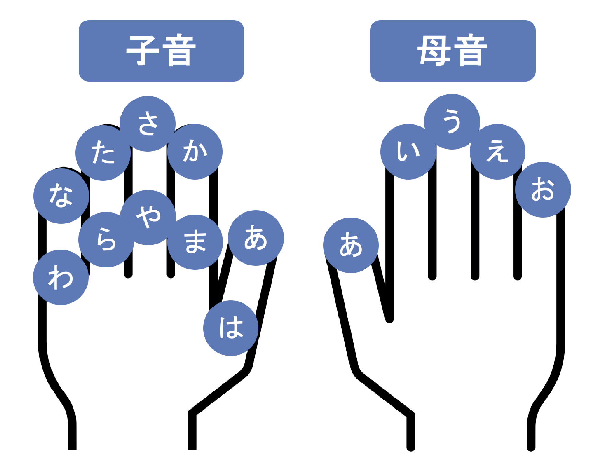

概要
本研究では、XR環境における新たな文字入力インターフェースを提案しました。左右の手の指先や指関節を接触させて文字を入力することで、入力時の負荷を軽減しながら利用できる方法を目指しました。

背景
ヘッドマウントディスプレイを用いたXR環境での文字入力では、ホログラムのキーボードによる入力が一般的です。一方で、こうした方法には、キーボードが視界を遮ってしまうことや、入力中にキーボードを見続ける必要があること、さらに腕が疲れやすいことなどの課題がありました。
そこで本研究では、これらの課題を解決する新たな文字入力インターフェースとして、指合わせによるXR文字入力インターフェースを開発しました。今回は、特にひらがな入力に焦点を当てて開発しています。
仕組み
このインターフェースでは、左手に子音、右手に母音を割り当てています。それぞれの指先や指関節を接触させ、その組み合わせによって文字を入力します。
例えば、左手人差し指先と右手中指先を接触させることで「く」を入力する、というように、両手の組み合わせでひらがなを選択する仕組みです。手元で入力でき、手の感覚を頼りに操作できるため、視界を塞がず、腕の移動も抑えられるようにしています。
